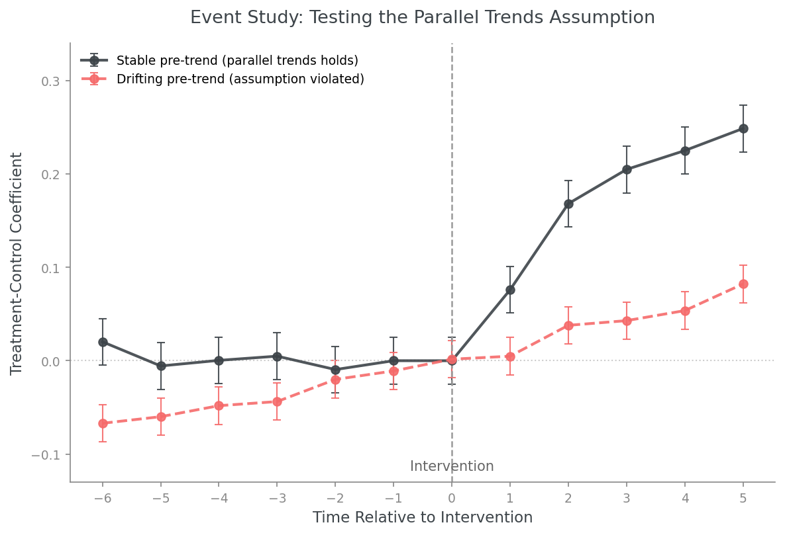

Why Parallel Trends Is the Most Important Assumption in Difference-in-Differences
July 2026 | Applied Economics | Causal Inference | ← Back to Blog
A Difference-in-Differences estimate can look statistically clean and still be wrong. This post explains why the parallel trends assumption is the foundation of every DiD analysis, what happens when it fails, and how to test it in practice.
The Core Assumption
Difference-in-Differences estimates a treatment effect by comparing the change in outcomes over time between a treated group and a control group. The method relies on one critical assumption: in the absence of the intervention, the treated and control groups would have followed parallel trends.
This assumption does more work than it first appears to. If it fails, the DiD regression will still produce a treatment effect estimate. The model does not know whether its own assumption holds. The estimate will simply combine the true treatment effect with whatever pre-existing difference in trends existed between the two groups. There is no diagnostic built into the regression output that tells you this has happened. The coefficient looks the same whether the assumption holds or not.
"A DiD model is only as good as its counterfactual. Without a believable counterfactual, even a statistically significant estimate can tell the wrong story."
Why Systematic Differences Are Not About the Intervention
The differences that violate parallel trends do not need to have anything to do with the intervention itself. Consider a concrete example. Suppose a city is experiencing rapid population growth because a major employer just opened a new headquarters there. Later, that same city is used as the control group for a pricing experiment conducted in a similar but demographically stagnant city.
Even before the intervention takes place, the two cities are already on different trajectories. The growing city's revenue, demand, and pricing dynamics are shifting for reasons entirely unrelated to the pricing experiment. Once the intervention occurs, any observed difference between the two cities reflects both the treatment effect and this pre-existing divergence. The DiD estimator has no way to separate the two. The regression coefficient will be a mixture of a real causal effect and a confound that has nothing to do with the treatment.
This is precisely why parallel trends is not a technicality to be checked and forgotten. It is the condition that determines whether the comparison is valid at all.
What Parallel Trends Is Not
A common misunderstanding is that parallel trends requires the treated and control groups to start at the same level before treatment. This is incorrect. The treated group can have a much higher or lower baseline outcome than the control group. What matters is the trajectory, not the starting point. Two groups with very different baseline revenue can still satisfy parallel trends if they move together over time, rising and falling by similar amounts in the periods leading up to the intervention.
This distinction matters in practice. Analysts sometimes reject a potential control group because its baseline level looks different from the treated group, when the actual test that matters is whether the two groups' trends have historically moved together.
How to Test the Assumption
Parallel trends cannot be tested for the post-treatment period. That is the entire reason the assumption is required in the first place. But it can be examined using pre-treatment data. The standard approach is an event study plot.
An event study plots the treatment-control coefficient for each time period relative to the intervention, with time on the horizontal axis and the coefficient on the vertical axis. The coefficients before the intervention are the ones that matter for this diagnostic. If those pre-treatment coefficients are relatively stable and centered around zero, the evidence is consistent with parallel trends. The two groups were moving together before the intervention took place. If the pre-treatment coefficients drift systematically away from zero in either direction, that is a warning sign. It suggests the two groups were already diverging before treatment, and any post-treatment estimate will likely reflect that divergence rather than a clean causal effect.
This diagnostic is necessary but not sufficient. A clean-looking pre-trend does not guarantee that parallel trends would have held going forward absent the intervention. It only provides evidence that the assumption is plausible. Economists sometimes describe this as testing a necessary condition rather than proving the assumption directly, since the post-treatment counterfactual can never be observed.

Illustrative event study plot. The dark line shows a stable pre-treatment trend near zero, consistent with parallel trends. The red dashed line shows coefficients drifting away from zero before the intervention, a warning sign that the groups were already diverging.
Common Threats to Parallel Trends
Beyond the differential growth example above, three other mechanisms commonly threaten the parallel trends assumption in applied work.
Selection into treatment. If units were selected for treatment precisely because they were already on a different trajectory, a struggling store selected for a turnaround pricing initiative, for example, the pre-treatment trend itself reflects the reason for selection, not a clean baseline.
Anticipation effects. If agents know a treatment is coming before it formally begins, they may adjust behavior in advance. A firm expecting a price increase next quarter might change purchasing behavior this quarter, contaminating the pre-treatment period before the intervention has technically started.
The Ashenfelter dip. Units are sometimes selected for treatment because they just experienced a temporary decline in outcomes. If that decline naturally reverses on its own, mean reversion, the recovery can look like a treatment effect even though it is simply a return to normal conditions.
Common Shocks Are Not the Threat
One important clarification: parallel trends does not require the absence of common shocks. A recession, a seasonal pattern, or an industry-wide shift that affects both the treated and control groups equally is not a violation of the assumption. These common shocks are differenced out by construction, that is exactly what the "differences" in Difference-in-Differences is doing. The threat to parallel trends comes specifically from differential trends between the groups, not from shared trends that both groups experience together.
Why This Matters Beyond the Regression
A DiD model is only as good as its counterfactual. In consulting and litigation settings, the choice of comparison group is almost always the most contested element of a damages or policy evaluation analysis. Opposing experts do not typically attack the regression specification itself. They attack whether the chosen control group satisfies parallel trends. In tech and marketplace settings, the same logic applies to geographic experiments and policy rollouts: the credibility of the causal claim rests entirely on whether the comparison market was a valid counterfactual before the intervention began.
Without a believable counterfactual, even a statistically significant estimate can tell the wrong story.
Further Reading
Card, D. and Krueger, A. (1994). Minimum Wages and Employment: A Case Study of the Fast-Food Industry in New Jersey and Pennsylvania. American Economic Review, 84(4), 772–793. The landmark applied DiD study.
Angrist, J. and Pischke, J.S. (2009). Mostly Harmless Econometrics: An Empiricist's Companion. Princeton University Press. Standard reference for the identifying assumptions behind DiD and related methods.
Roth, J. (2022). Pretest with Caution: Event-Study Estimates after Testing for Parallel Trends. American Economic Review: Insights, 4(3), 305–322. A careful treatment of the limitations of pre-trend testing as evidence for parallel trends.